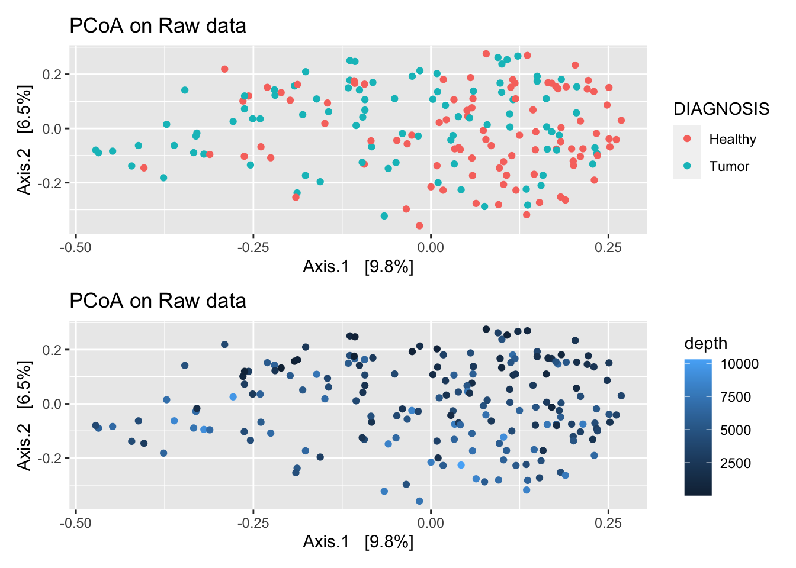
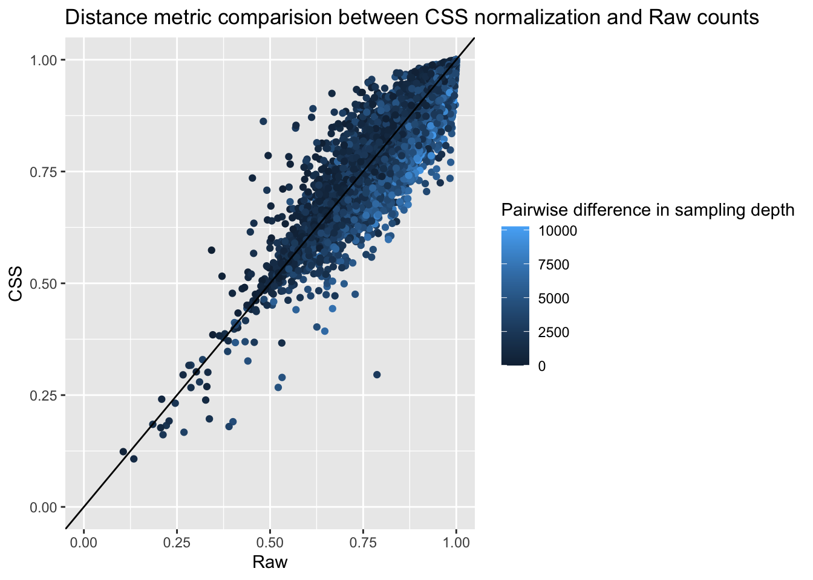

Chapter 7 Cumulative sum scaling (CSS)
Cumulative sum scaling is a scaling normalization method, developed for marker gene sequencing, It is intended to account for undersampling and correct biases from preferentially amplified features in a sample-specific manner (Paulson et al. 2013). This method assumes that count distributions should be roughly equivalent and independent to each other up to the given quantile which is chosen as the smallest value at which instability is found. This method is an extension to UQ scaling where a quantile is specified. If there is high count variability the assumption may not be met. This is not a method that accounts for compositionality. CSS normalization initially showed improvements in separating samples biologically in ordination, it was shown to be an artifact of unequal application of log transformation across methods (Costea et al. 2014).
7.1 CSS implementation
norm_CSS <- function(ps){
require(metagenomeSeq)
# Convert to metagenomeSeq data type
ps.metaG<-phyloseq_to_metagenomeSeq(ps)
p_stat = cumNormStatFast(ps.metaG)
ps.metaG = cumNorm(ps.metaG, p = p_stat)
ps.metaG.norm <- MRcounts(ps.metaG, norm = T)
# Convert back to phyloseq with normalized counts
otu <- otu_table(ps.metaG.norm, taxa_are_rows = T)
sam <- access(ps, "sam_data")
sam$scaling_factor <- normFactors(ps.metaG)/1e6
tax <- access(ps, "tax_table")
phy <- access(ps, "phy_tree")
ps_CSS <- phyloseq(otu,sam,tax,phy)
return(ps_CSS)
}7.2 CSS on Global Patterns
Perform CSS normalization:
## Default value being used.View how TMM normalization changes distance metrics differently than raw counts.
plot_norm_changes(gp_css, gp_raw,
x_lab = "Raw", y_lab = "CSS",
title = "Distance metric comparision between CSS normalization and Raw counts")
plot_norm_changes(gp_css, gp_tss,
x_lab = "TSS", y_lab = "CSS",
title = "Distance metric comparision between CSS normalization and TSS normalization")
CSS normalization appears to consider pairs as more different than TSS normalization, and pairs with high sequencing depth differences even more so.
References
Costea, Paul I., Georg Zeller, Shinichi Sunagawa, and Peer Bork. 2014. “A Fair Comparison.” Nature Methods 11 (4): 359–59. https://doi.org/10.1038/nmeth.2897.
Paulson, Joseph N., O. Colin Stine, Héctor Corrada Bravo, and Mihai Pop. 2013. “Differential Abundance Analysis for Microbial Marker-Gene Surveys.” Nature Methods 10 (12): 1200–1202. https://doi.org/10.1038/nmeth.2658.